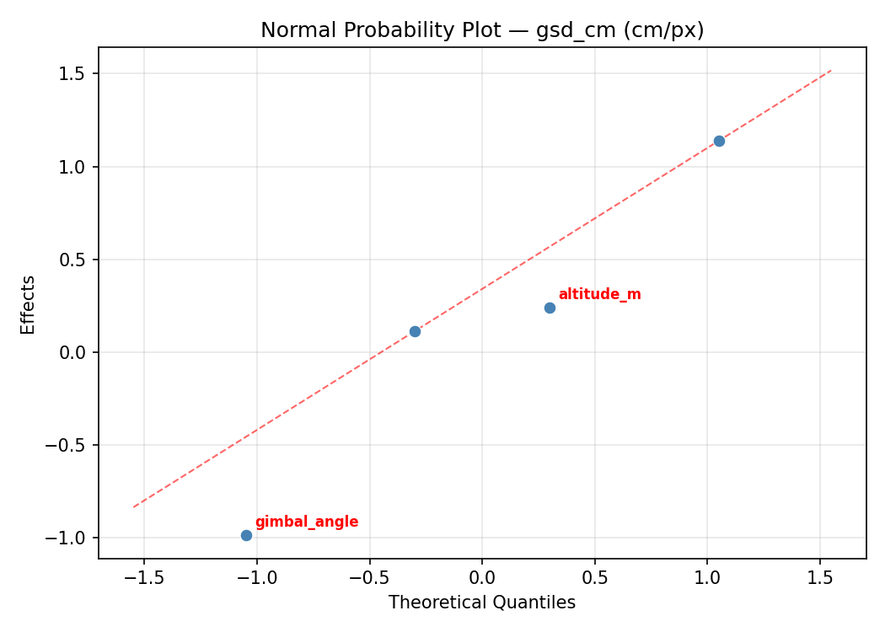
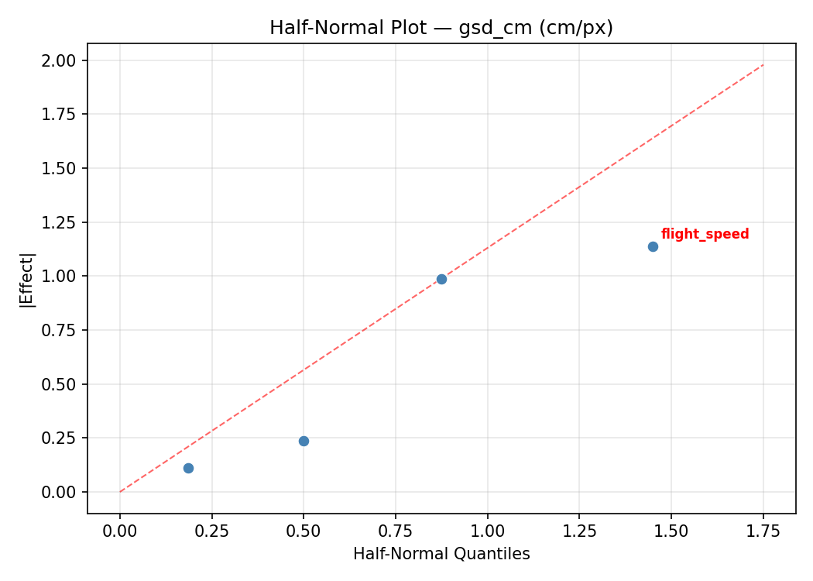
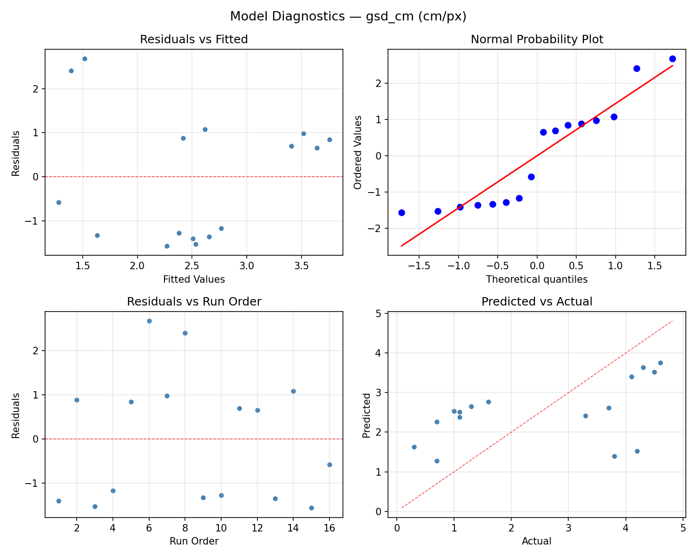
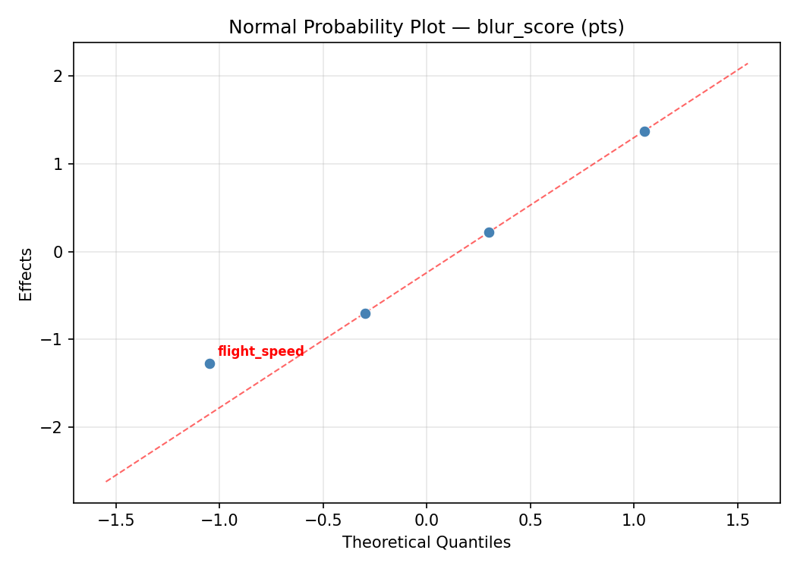
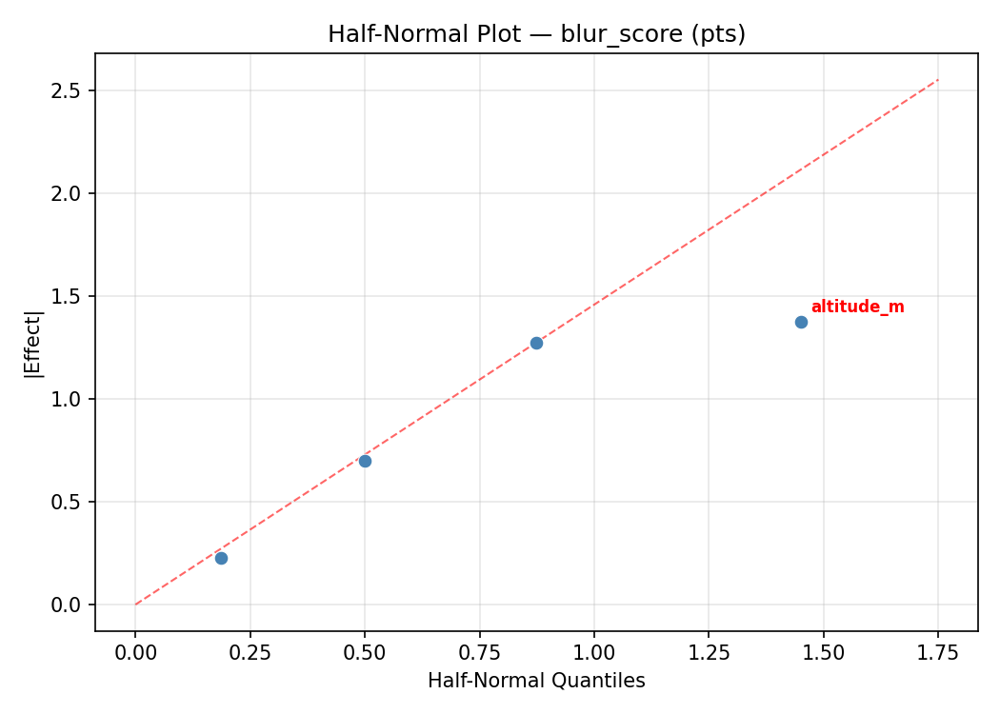
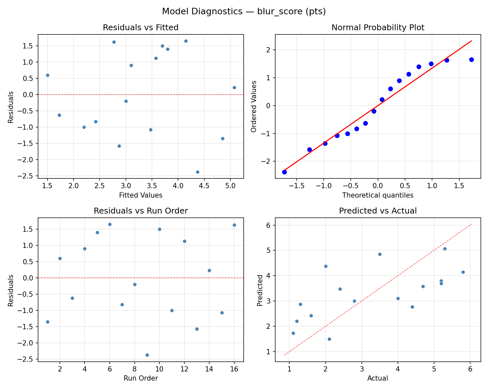

Summary
This experiment investigates drone aerial photography. Full factorial of altitude, gimbal angle, flight speed, and overlap percentage to maximize ground resolution and minimize motion blur.
The design varies 4 factors: altitude m (m), ranging from 30 to 120, gimbal angle (deg), ranging from -90 to -45, flight speed (m/s), ranging from 2 to 12, and overlap pct (%), ranging from 60 to 85. The goal is to optimize 2 responses: gsd cm (cm/px) (minimize) and blur score (pts) (minimize). Fixed conditions held constant across all runs include camera = 1inch_sensor, wind = light.
A full factorial design was used to explore all 16 possible combinations of the 4 factors at two levels. This guarantees that every main effect and interaction can be estimated independently, at the cost of a larger experiment (16 runs).
Quadratic response surface models were fitted to capture potential curvature and factor interactions. The RSM contour plots below visualize how pairs of factors jointly affect each response.
Key Findings
For gsd cm, the most influential factors were altitude m (57.5%), overlap pct (22.5%), gimbal angle (12.5%). The best observed value was 0.3 (at altitude m = 120, gimbal angle = -90, flight speed = 2).
For blur score, the most influential factors were altitude m (65.1%), gimbal angle (16.3%), flight speed (16.3%). The best observed value was 1.1 (at altitude m = 120, gimbal angle = -45, flight speed = 12).
Recommended Next Steps
- Consider whether any fixed factors should be varied in a future study.
Experimental Setup
Factors
| Factor | Low | High | Unit |
|---|
altitude_m | 30 | 120 | m |
gimbal_angle | -90 | -45 | deg |
flight_speed | 2 | 12 | m/s |
overlap_pct | 60 | 85 | % |
Fixed: camera = 1inch_sensor, wind = light
Responses
| Response | Direction | Unit |
|---|
gsd_cm | ↓ minimize | cm/px |
blur_score | ↓ minimize | pts |
Configuration
{
"metadata": {
"name": "Drone Aerial Photography",
"description": "Full factorial of altitude, gimbal angle, flight speed, and overlap percentage to maximize ground resolution and minimize motion blur"
},
"factors": [
{
"name": "altitude_m",
"levels": [
"30",
"120"
],
"type": "continuous",
"unit": "m"
},
{
"name": "gimbal_angle",
"levels": [
"-90",
"-45"
],
"type": "continuous",
"unit": "deg"
},
{
"name": "flight_speed",
"levels": [
"2",
"12"
],
"type": "continuous",
"unit": "m/s"
},
{
"name": "overlap_pct",
"levels": [
"60",
"85"
],
"type": "continuous",
"unit": "%"
}
],
"fixed_factors": {
"camera": "1inch_sensor",
"wind": "light"
},
"responses": [
{
"name": "gsd_cm",
"optimize": "minimize",
"unit": "cm/px"
},
{
"name": "blur_score",
"optimize": "minimize",
"unit": "pts"
}
],
"settings": {
"operation": "full_factorial",
"test_script": "use_cases/154_drone_aerial_photo/sim.sh"
}
}
Experimental Matrix
The Full Factorial Design produces 16 runs. Each row is one experiment with specific factor settings.
| Run | altitude_m | gimbal_angle | flight_speed | overlap_pct |
|---|
| 1 | 30 | -45 | 12 | 85 |
| 2 | 120 | -90 | 2 | 85 |
| 3 | 30 | -45 | 2 | 85 |
| 4 | 30 | -45 | 12 | 60 |
| 5 | 120 | -45 | 12 | 60 |
| 6 | 120 | -90 | 12 | 60 |
| 7 | 120 | -45 | 2 | 60 |
| 8 | 120 | -90 | 2 | 60 |
| 9 | 30 | -90 | 2 | 85 |
| 10 | 30 | -90 | 12 | 60 |
| 11 | 120 | -45 | 2 | 85 |
| 12 | 120 | -45 | 12 | 85 |
| 13 | 30 | -45 | 2 | 60 |
| 14 | 120 | -90 | 12 | 85 |
| 15 | 30 | -90 | 2 | 60 |
| 16 | 30 | -90 | 12 | 85 |
Step-by-Step Workflow
1
Preview the design
$ python doe.py info --config use_cases/154_drone_aerial_photo/config.json
2
Generate the runner script
$ python doe.py generate --config use_cases/154_drone_aerial_photo/config.json \
--output use_cases/154_drone_aerial_photo/results/run.sh --seed 42
3
Execute the experiments
$ bash use_cases/154_drone_aerial_photo/results/run.sh
4
Analyze results
$ python doe.py analyze --config use_cases/154_drone_aerial_photo/config.json
5
Get optimization recommendations
$ python doe.py optimize --config use_cases/154_drone_aerial_photo/config.json
6
Multi-objective optimization
With 2 competing responses, use --multi to find the best compromise via Derringer–Suich desirability.
$ python doe.py optimize --config use_cases/154_drone_aerial_photo/config.json --multi
7
Generate the HTML report
$ python doe.py report --config use_cases/154_drone_aerial_photo/config.json \
--output use_cases/154_drone_aerial_photo/results/report.html
Features Exercised
| Feature | Value |
|---|
| Design type | full_factorial |
| Factor types | continuous (all 4) |
| Arg style | double-dash |
| Responses | 2 (gsd_cm ↓, blur_score ↓) |
| Total runs | 16 |
Analysis Results
Generated from actual experiment runs using the DOE Helper Tool.
Response: gsd_cm
Top factors: altitude_m (57.5%), overlap_pct (22.5%), gimbal_angle (12.5%).
ANOVA
| Source | DF | SS | MS | F | p-value |
|---|
| Source | DF | SS | MS | F | p-value |
| altitude_m | 1 | 2.9756 | 2.9756 | 1.300 | 0.3058 |
| gimbal_angle | 1 | 0.1406 | 0.1406 | 0.061 | 0.8141 |
| flight_speed | 1 | 0.0506 | 0.0506 | 0.022 | 0.8876 |
| overlap_pct | 1 | 0.4556 | 0.4556 | 0.199 | 0.6741 |
| altitude_m*gimbal_angle | 1 | 2.8056 | 2.8056 | 1.226 | 0.3186 |
| altitude_m*flight_speed | 1 | 3.3306 | 3.3306 | 1.455 | 0.2816 |
| altitude_m*overlap_pct | 1 | 18.2756 | 18.2756 | 7.985 | 0.0369 |
| gimbal_angle*flight_speed | 1 | 0.0756 | 0.0756 | 0.033 | 0.8629 |
| gimbal_angle*overlap_pct | 1 | 1.0506 | 1.0506 | 0.459 | 0.5281 |
| flight_speed*overlap_pct | 1 | 0.0006 | 0.0006 | 0.000 | 0.9875 |
| Error | 5 | 11.4431 | 2.2886 | | |
| Total | 15 | 40.6044 | 2.7070 | | |
Pareto Chart

Main Effects Plot

Normal Probability Plot of Effects

Half-Normal Plot of Effects

Model Diagnostics

Response: blur_score
Top factors: altitude_m (65.1%), gimbal_angle (16.3%), flight_speed (16.3%).
ANOVA
| Source | DF | SS | MS | F | p-value |
|---|
| Source | DF | SS | MS | F | p-value |
| altitude_m | 1 | 1.9600 | 1.9600 | 0.338 | 0.5861 |
| gimbal_angle | 1 | 0.1225 | 0.1225 | 0.021 | 0.8901 |
| flight_speed | 1 | 0.1225 | 0.1225 | 0.021 | 0.8901 |
| overlap_pct | 1 | 0.0025 | 0.0025 | 0.000 | 0.9842 |
| altitude_m*gimbal_angle | 1 | 0.8100 | 0.8100 | 0.140 | 0.7239 |
| altitude_m*flight_speed | 1 | 0.2500 | 0.2500 | 0.043 | 0.8437 |
| altitude_m*overlap_pct | 1 | 2.5600 | 2.5600 | 0.442 | 0.5357 |
| gimbal_angle*flight_speed | 1 | 6.5025 | 6.5025 | 1.122 | 0.3380 |
| gimbal_angle*overlap_pct | 1 | 0.1225 | 0.1225 | 0.021 | 0.8901 |
| flight_speed*overlap_pct | 1 | 0.0625 | 0.0625 | 0.011 | 0.9213 |
| Error | 5 | 28.9825 | 5.7965 | | |
| Total | 15 | 41.4975 | 2.7665 | | |
Pareto Chart

Main Effects Plot

Normal Probability Plot of Effects

Half-Normal Plot of Effects

Model Diagnostics

Response Surface Plots
3D surfaces fitted with quadratic RSM. Red dots are observed data points.
blur score altitude m vs flight speed

blur score altitude m vs gimbal angle

blur score altitude m vs overlap pct

blur score flight speed vs overlap pct

blur score gimbal angle vs flight speed

blur score gimbal angle vs overlap pct

gsd cm altitude m vs flight speed

gsd cm altitude m vs gimbal angle

gsd cm altitude m vs overlap pct

gsd cm flight speed vs overlap pct

gsd cm gimbal angle vs flight speed

gsd cm gimbal angle vs overlap pct

Multi-Objective Optimization
When responses compete, Derringer–Suich desirability finds the best compromise.
Each response is scaled to a 0–1 desirability, then combined via a weighted geometric mean.
Overall Desirability
D = 0.8923
Per-Response Desirability
| Response | Weight | Desirability | Predicted | Dir |
|---|
gsd_cm |
1.0 |
|
1.00 0.8066 1.00 cm/px |
↓ |
blur_score |
1.5 |
|
1.10 0.9545 1.10 pts |
↓ |
Recommended Settings
| Factor | Value |
|---|
altitude_m | 30 m |
gimbal_angle | -90 deg |
flight_speed | 12 m/s |
overlap_pct | 85 % |
Source: from observed run #3
Trade-off Summary
Sacrifice = how much worse than single-objective best.
| Response | Predicted | Best Observed | Sacrifice |
|---|
blur_score | 1.10 | 1.10 | +0.00 |
Top 3 Runs by Desirability
| Run | D | Factor Settings |
|---|
| #9 | 0.8459 | altitude_m=30, gimbal_angle=-90, flight_speed=2, overlap_pct=85 |
| #13 | 0.8424 | altitude_m=120, gimbal_angle=-90, flight_speed=12, overlap_pct=85 |
Model Quality
| Response | R² | Type |
|---|
blur_score | 0.4647 | linear |
Full Multi-Objective Output
============================================================
MULTI-OBJECTIVE OPTIMIZATION
Method: Derringer-Suich Desirability Function
============================================================
Overall desirability: D = 0.8923
Response Weight Desirability Predicted Direction
---------------------------------------------------------------------
gsd_cm 1.0 0.8066 1.00 cm/px ↓
blur_score 1.5 0.9545 1.10 pts ↓
Recommended settings:
altitude_m = 30 m
gimbal_angle = -90 deg
flight_speed = 12 m/s
overlap_pct = 85 %
(from observed run #3)
Trade-off summary:
gsd_cm: 1.00 (best observed: 0.30, sacrifice: +0.70)
blur_score: 1.10 (best observed: 1.10, sacrifice: +0.00)
Model quality:
gsd_cm: R² = 0.2546 (linear)
blur_score: R² = 0.4647 (linear)
Top 3 observed runs by overall desirability:
1. Run #3 (D=0.8923): altitude_m=30, gimbal_angle=-90, flight_speed=12, overlap_pct=85
2. Run #9 (D=0.8459): altitude_m=30, gimbal_angle=-90, flight_speed=2, overlap_pct=85
3. Run #13 (D=0.8424): altitude_m=120, gimbal_angle=-90, flight_speed=12, overlap_pct=85
Full Analysis Output
=== Main Effects: gsd_cm ===
Factor Effect Std Error % Contribution
--------------------------------------------------------------
altitude_m 0.8625 0.4113 57.5%
overlap_pct -0.3375 0.4113 22.5%
gimbal_angle 0.1875 0.4113 12.5%
flight_speed 0.1125 0.4113 7.5%
=== ANOVA Table: gsd_cm ===
Source DF SS MS F p-value
-----------------------------------------------------------------------------
altitude_m 1 2.9756 2.9756 1.300 0.3058
gimbal_angle 1 0.1406 0.1406 0.061 0.8141
flight_speed 1 0.0506 0.0506 0.022 0.8876
overlap_pct 1 0.4556 0.4556 0.199 0.6741
altitude_m*gimbal_angle 1 2.8056 2.8056 1.226 0.3186
altitude_m*flight_speed 1 3.3306 3.3306 1.455 0.2816
altitude_m*overlap_pct 1 18.2756 18.2756 7.985 0.0369
gimbal_angle*flight_speed 1 0.0756 0.0756 0.033 0.8629
gimbal_angle*overlap_pct 1 1.0506 1.0506 0.459 0.5281
flight_speed*overlap_pct 1 0.0006 0.0006 0.000 0.9875
Error 5 11.4431 2.2886
Total 15 40.6044 2.7070
=== Interaction Effects: gsd_cm ===
Factor A Factor B Interaction % Contribution
------------------------------------------------------------------------
altitude_m overlap_pct 2.1375 47.0%
altitude_m flight_speed -0.9125 20.1%
altitude_m gimbal_angle -0.8375 18.4%
gimbal_angle overlap_pct 0.5125 11.3%
gimbal_angle flight_speed -0.1375 3.0%
flight_speed overlap_pct -0.0125 0.3%
=== Summary Statistics: gsd_cm ===
altitude_m:
Level N Mean Std Min Max
------------------------------------------------------------
120 8 2.0875 1.7868 0.3000 4.6000
30 8 2.9500 1.4774 1.0000 4.5000
gimbal_angle:
Level N Mean Std Min Max
------------------------------------------------------------
-45 8 2.4250 1.7958 0.3000 4.6000
-90 8 2.6125 1.5986 1.0000 4.3000
flight_speed:
Level N Mean Std Min Max
------------------------------------------------------------
12 8 2.4625 1.8079 0.3000 4.5000
2 8 2.5750 1.5890 0.7000 4.6000
overlap_pct:
Level N Mean Std Min Max
------------------------------------------------------------
60 8 2.6875 1.7308 0.7000 4.6000
85 8 2.3500 1.6553 0.3000 4.3000
=== Main Effects: blur_score ===
Factor Effect Std Error % Contribution
--------------------------------------------------------------
altitude_m -0.7000 0.4158 65.1%
gimbal_angle -0.1750 0.4158 16.3%
flight_speed -0.1750 0.4158 16.3%
overlap_pct -0.0250 0.4158 2.3%
=== ANOVA Table: blur_score ===
Source DF SS MS F p-value
-----------------------------------------------------------------------------
altitude_m 1 1.9600 1.9600 0.338 0.5861
gimbal_angle 1 0.1225 0.1225 0.021 0.8901
flight_speed 1 0.1225 0.1225 0.021 0.8901
overlap_pct 1 0.0025 0.0025 0.000 0.9842
altitude_m*gimbal_angle 1 0.8100 0.8100 0.140 0.7239
altitude_m*flight_speed 1 0.2500 0.2500 0.043 0.8437
altitude_m*overlap_pct 1 2.5600 2.5600 0.442 0.5357
gimbal_angle*flight_speed 1 6.5025 6.5025 1.122 0.3380
gimbal_angle*overlap_pct 1 0.1225 0.1225 0.021 0.8901
flight_speed*overlap_pct 1 0.0625 0.0625 0.011 0.9213
Error 5 28.9825 5.7965
Total 15 41.4975 2.7665
=== Interaction Effects: blur_score ===
Factor A Factor B Interaction % Contribution
------------------------------------------------------------------------
gimbal_angle flight_speed -1.2750 41.5%
altitude_m overlap_pct 0.8000 26.0%
altitude_m gimbal_angle -0.4500 14.6%
altitude_m flight_speed 0.2500 8.1%
gimbal_angle overlap_pct -0.1750 5.7%
flight_speed overlap_pct -0.1250 4.1%
=== Summary Statistics: blur_score ===
altitude_m:
Level N Mean Std Min Max
------------------------------------------------------------
120 8 3.6375 1.7121 1.3000 5.8000
30 8 2.9375 1.6483 1.1000 5.3000
gimbal_angle:
Level N Mean Std Min Max
------------------------------------------------------------
-45 8 3.3750 1.5163 1.6000 5.3000
-90 8 3.2000 1.9004 1.1000 5.8000
flight_speed:
Level N Mean Std Min Max
------------------------------------------------------------
12 8 3.3750 1.8383 1.2000 5.8000
2 8 3.2000 1.5910 1.1000 5.2000
overlap_pct:
Level N Mean Std Min Max
------------------------------------------------------------
60 8 3.3000 1.6553 1.1000 5.8000
85 8 3.2750 1.7855 1.2000 5.3000
Optimization Recommendations
=== Optimization: gsd_cm ===
Direction: minimize
Best observed run: #9
altitude_m = 120
gimbal_angle = -90
flight_speed = 2
overlap_pct = 85
Value: 0.3
RSM Model (linear, R² = 0.5393, Adj R² = 0.3718):
Coefficients:
intercept +2.5188
altitude_m -0.6812
gimbal_angle +0.8812
flight_speed +0.3562
overlap_pct +0.0312
RSM Model (quadratic, R² = 0.7390, Adj R² = -2.9151):
Coefficients:
intercept +0.5038
altitude_m -0.6813
gimbal_angle +0.8812
flight_speed +0.3563
overlap_pct +0.0312
altitude_m*gimbal_angle +0.0312
altitude_m*flight_speed -0.2938
altitude_m*overlap_pct +0.0062
gimbal_angle*flight_speed -0.4312
gimbal_angle*overlap_pct +0.0438
flight_speed*overlap_pct -0.4813
altitude_m^2 +0.5038
gimbal_angle^2 +0.5038
flight_speed^2 +0.5038
overlap_pct^2 +0.5038
Curvature analysis:
overlap_pct coef=+0.5038 convex (has a minimum)
flight_speed coef=+0.5038 convex (has a minimum)
altitude_m coef=+0.5038 convex (has a minimum)
gimbal_angle coef=+0.5038 convex (has a minimum)
Notable interactions:
flight_speed*overlap_pct coef=-0.4813 (antagonistic)
gimbal_angle*flight_speed coef=-0.4312 (antagonistic)
Predicted optimum (from linear model, at observed points):
altitude_m = 30
gimbal_angle = -45
flight_speed = 12
overlap_pct = 85
Predicted value: 4.4688
Surface optimum (via L-BFGS-B, linear model):
altitude_m = 120
gimbal_angle = -90
flight_speed = 2
overlap_pct = 60
Predicted value: 0.5688
Model quality: Moderate fit — use predictions directionally, not precisely.
Factor importance:
1. gimbal_angle (effect: -1.8, contribution: 45.2%)
2. altitude_m (effect: 1.4, contribution: 34.9%)
3. flight_speed (effect: -0.7, contribution: 18.3%)
4. overlap_pct (effect: 0.1, contribution: 1.6%)
=== Optimization: blur_score ===
Direction: minimize
Best observed run: #3
altitude_m = 120
gimbal_angle = -45
flight_speed = 12
overlap_pct = 85
Value: 1.1
RSM Model (linear, R² = 0.4559, Adj R² = 0.2581):
Coefficients:
intercept +3.2875
altitude_m +0.2250
gimbal_angle +0.6750
flight_speed -0.2750
overlap_pct -0.7750
RSM Model (quadratic, R² = 0.6515, Adj R² = -4.2277):
Coefficients:
intercept +0.6575
altitude_m +0.2250
gimbal_angle +0.6750
flight_speed -0.2750
overlap_pct -0.7750
altitude_m*gimbal_angle -0.1375
altitude_m*flight_speed -0.1875
altitude_m*overlap_pct +0.3375
gimbal_angle*flight_speed -0.0875
gimbal_angle*overlap_pct -0.5125
flight_speed*overlap_pct +0.2625
altitude_m^2 +0.6575
gimbal_angle^2 +0.6575
flight_speed^2 +0.6575
overlap_pct^2 +0.6575
Curvature analysis:
flight_speed coef=+0.6575 convex (has a minimum)
overlap_pct coef=+0.6575 convex (has a minimum)
altitude_m coef=+0.6575 convex (has a minimum)
gimbal_angle coef=+0.6575 convex (has a minimum)
Notable interactions:
gimbal_angle*overlap_pct coef=-0.5125 (antagonistic)
altitude_m*overlap_pct coef=+0.3375 (synergistic)
Predicted optimum (from linear model, at observed points):
altitude_m = 120
gimbal_angle = -45
flight_speed = 2
overlap_pct = 60
Predicted value: 5.2375
Surface optimum (via L-BFGS-B, linear model):
altitude_m = 30
gimbal_angle = -90
flight_speed = 12
overlap_pct = 85
Predicted value: 1.3375
Model quality: Weak fit — consider adding center points or using a different design.
Factor importance:
1. overlap_pct (effect: -1.5, contribution: 39.7%)
2. gimbal_angle (effect: -1.4, contribution: 34.6%)
3. flight_speed (effect: 0.5, contribution: 14.1%)
4. altitude_m (effect: -0.5, contribution: 11.5%)